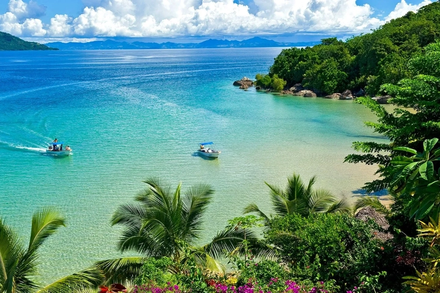
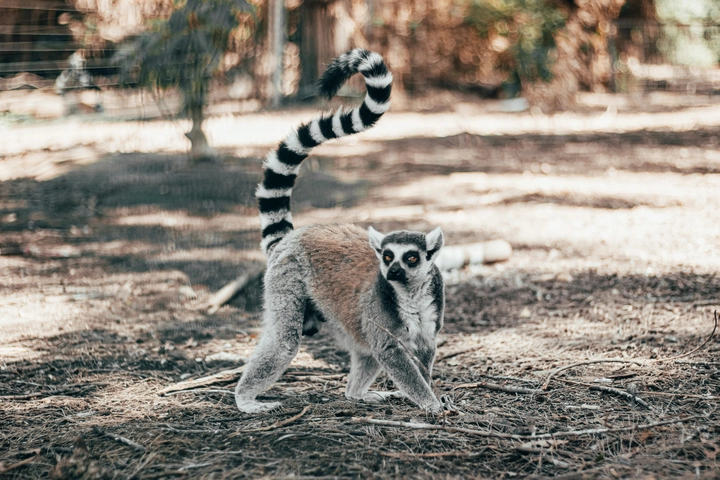
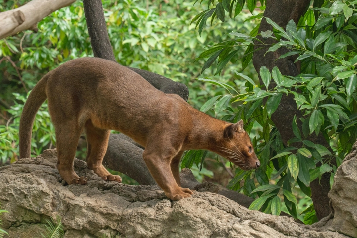
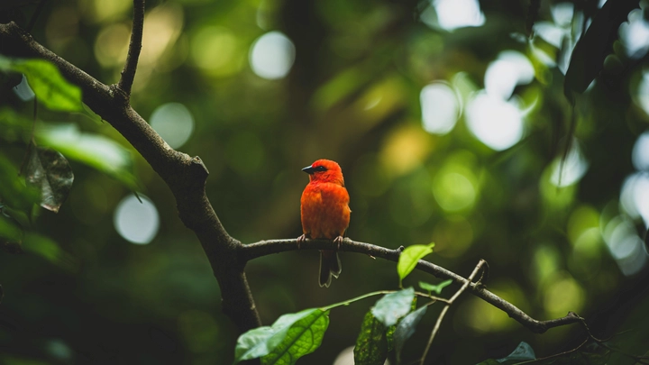
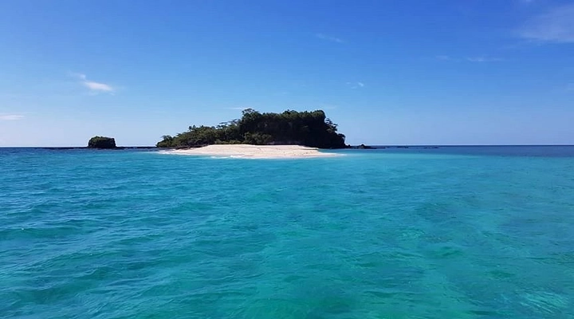

Madagascar - Hòn đảo của các loài độc nhất vô nhị
Madagascar – hòn đảo lớn thứ tư thế giới – nổi bật không chỉ bởi cảnh quan tuyệt đẹp mà còn vì sự độc đáo sinh học hiếm có. Tách biệt khỏi lục địa châu Phi hơn 80 triệu năm, Madagascar đã trở thành ngôi nhà của hàng nghìn loài động thực vật chỉ có trên đảo này, từ vượn cáo, fossa, đến những loài thực vật kỳ lạ không nơi nào khác có. Với hơn 90% loài trên đảo là đặc hữu, Madagascar được coi là một kho báu sinh học sống động, nơi các nhà khoa học, nhiếp ảnh gia và người yêu thiên nhiên đều khao khát khám phá. Trong bài viết này, TrithucWorld sẽ cùng các quý độc giả tìm hiểu về các loài sinh vật độc đáo, hệ sinh thái nguyên sơ và giá trị bảo tồn của hòn đảo này.
1. Giới thiệu về Madagascar – Hòn đảo độc đáo của thế giới
Madagascar nằm ngoài khơi phía đông châu Phi, với diện tích gần 587.000 km², là hòn đảo lớn thứ tư hành tinh. Điều làm nên sự đặc biệt của Madagascar không chỉ là kích thước mà còn là sự biệt lập địa lý kéo dài hàng triệu năm. Chính yếu tố này đã tạo ra một hệ sinh thái độc đáo, nơi hầu hết các loài động thực vật không thể tìm thấy ở bất kỳ nơi nào khác trên Trái đất.
Khí hậu Madagascar đa dạng, từ nhiệt đới ẩm ở miền đông đến bán khô hạn ở miền tây, cùng với địa hình phong phú gồm rừng nguyên sinh, đồng cỏ và sa mạc đá, đã tạo điều kiện cho sự phát triển của các loài đặc hữu. Madagascar cũng nổi bật với sự kết hợp giữa thiên nhiên và văn hóa bản địa, nơi cộng đồng người Malagasy vẫn duy trì các phong tục, lễ hội và gắn bó mật thiết với môi trường xung quanh.

Hòn đảo không chỉ là trung tâm nghiên cứu khoa học, mà còn là điểm đến du lịch sinh thái hấp dẫn. Du khách có thể trải nghiệm từ rừng mưa nguyên sơ, hồ nước trong xanh, đến những loài sinh vật kỳ lạ, tất cả đều mang lại cảm giác khám phá và kinh ngạc. Madagascar là minh chứng sống động cho tầm quan trọng của bảo tồn đa dạng sinh học trong thế giới hiện đại.
2. Hệ sinh thái đa dạng và các khu rừng nguyên sinh
Madagascar sở hữu hơn 20 khu rừng quốc gia và nhiều khu bảo tồn thiên nhiên, nơi các loài thực vật và động vật quý hiếm cùng sinh sống. Rừng mưa miền đông Madagascar, như Andasibe-Mantadia, là nơi trú ngụ của vượn cáo Indri – loài vượn cáo lớn nhất còn tồn tại – cùng hàng trăm loài chim, bò sát và côn trùng đặc hữu.
Đặc điểm nổi bật của hệ sinh thái Madagascar là sự đa dạng sinh học phong phú và đặc hữu cao. Hơn 80% các loài thực vật trên đảo là đặc hữu, bao gồm baobab – loài cây biểu tượng với thân to, tán rộng và tuổi thọ hàng trăm năm. Ngoài ra, Madagascar còn là nơi sinh sống của các loài lan, cây thuốc quý và các loài cây hiếm khác, góp phần tạo nên một kho tàng sinh học có giá trị toàn cầu.
Hệ sinh thái nguyên sơ không chỉ mang lại cảnh quan đẹp mắt mà còn giữ vai trò quan trọng trong việc bảo vệ đất, điều hòa khí hậu và duy trì cân bằng môi trường. Tuy nhiên, những năm gần đây, sự phát triển nông nghiệp, khai thác gỗ và chăn thả gia súc đã gây áp lực lên rừng nguyên sinh, đe dọa sự sống còn của nhiều loài quý hiếm. Chính vì vậy, Madagascar đang triển khai các chương trình bảo tồn sinh học và du lịch bền vững nhằm cân bằng giữa phát triển kinh tế và bảo vệ thiên nhiên.
3. Vượn cáo (Lemur) – Biểu tượng sinh vật đặc hữu
Vượn cáo là loài động vật biểu tượng của Madagascar, nổi bật với mắt to tròn, đuôi dài và hành vi xã hội đặc trưng. Có hơn 100 loài vượn cáo khác nhau trên đảo, từ vượn cáo nhỏ như mouse lemur cho đến vượn cáo lớn Indri. Chúng sống chủ yếu ở rừng mưa, rừng khô và thung lũng đá, tạo nên một phần quan trọng của hệ sinh thái, giúp phân tán hạt, thụ phấn và duy trì cân bằng sinh học.
Vượn cáo thường hoạt động vào ban ngày hoặc ban đêm tùy loài, và mỗi loài có phong cách sống và thức ăn riêng biệt, từ lá, hoa, quả đến côn trùng. Chúng cũng có hành vi xã hội phong phú, sống theo bầy, giao tiếp bằng âm thanh đặc trưng và thể hiện sự thông minh trong việc tìm kiếm thức ăn.

Tuy nhiên, nhiều loài vượn cáo đang bị đe dọa do mất rừng và săn bắt trái phép. Các khu bảo tồn như Andasibe-Mantadia và Ranomafana đã triển khai chương trình bảo vệ vượn cáo, kết hợp giáo dục cộng đồng và nghiên cứu khoa học. Nhờ đó, du khách khi đến Madagascar không chỉ chiêm ngưỡng loài vượn cáo đặc hữu mà còn hiểu được tầm quan trọng của việc bảo vệ đa dạng sinh học.
4. Fossa – Kẻ săn mồi đặc biệt của Madagascar
Fossa là loài thú săn mồi lớn nhất Madagascar, thuộc họ mèo nhưng lại có ngoại hình độc đáo, thân dài và chân mạnh mẽ, thích nghi với địa hình rừng rậm. Đây là kẻ săn mồi đứng đầu trong chuỗi thức ăn, chuyên săn vượn cáo, chim và các loài động vật nhỏ khác. Khả năng leo trèo điêu luyện và tốc độ nhanh giúp fossa chiếm ưu thế trong môi trường sống khắc nghiệt.
Fossa là loài hiếm, với dân số suy giảm nghiêm trọng do mất rừng và săn bắn. Chúng thường hoạt động vào ban đêm, ít xuất hiện trước con người, điều này khiến fossa trở thành một trong những loài khó quan sát nhất Madagascar. Các chương trình bảo tồn đang nỗ lực giám sát, nghiên cứu và bảo vệ loài này, đồng thời nâng cao nhận thức cộng đồng về giá trị sinh thái của fossa.

Đáng chú ý, fossa là minh chứng cho sự tiến hóa độc đáo của Madagascar, khi một số loài chỉ tìm thấy duy nhất ở đây. Nhờ sự biệt lập hàng triệu năm, hòn đảo đã tạo ra một môi trường hoàn hảo để fossa và các loài đặc hữu khác phát triển, góp phần tăng giá trị bảo tồn và nghiên cứu sinh học toàn cầu.
5. Các loài chim quý hiếm và đặc hữu
Madagascar là thiên đường của các loài chim hiếm và đặc hữu, với hơn 250 loài được ghi nhận, trong đó gần 100 loài chỉ tìm thấy trên đảo này. Những loài nổi bật bao gồm vang đỏ Madagascar, vẹt coua, và chích chòe Madagascar, mỗi loài có màu sắc sặc sỡ và tiếng hót đặc trưng.
Chim ở Madagascar đóng vai trò quan trọng trong thụ phấn, phân tán hạt và duy trì cân bằng hệ sinh thái. Một số loài thích nghi với rừng mưa, trong khi các loài khác sống ở đồng cỏ hoặc vùng núi khô cằn. Sự phong phú về loài và màu sắc khiến Madagascar trở thành điểm đến hấp dẫn cho các nhà nghiên cứu và nhiếp ảnh gia thiên nhiên.

Tuy nhiên, mất rừng và săn bắt khiến nhiều loài chim Madagascar trở nên dễ tổn thương. Các chương trình bảo tồn kết hợp nghiên cứu, giám sát và giáo dục cộng đồng đang nỗ lực bảo vệ và phục hồi quần thể chim quý hiếm, đồng thời thúc đẩy du lịch sinh thái bền vững. Du khách khi đến Madagascar không chỉ ngắm nhìn cảnh đẹp thiên nhiên mà còn hiểu rõ hơn về giá trị đa dạng sinh học của hòn đảo độc nhất vô nhị này.
6. Thực vật kỳ lạ và dược liệu bản địa
Madagascar không chỉ nổi tiếng với các loài động vật đặc hữu mà còn là ngôi nhà của những loài thực vật hiếm và quý giá. Hòn đảo này có hơn 12.000 loài thực vật được ghi nhận, trong đó gần 90% là đặc hữu. Một trong những biểu tượng nổi tiếng là cây baobab, với thân to, hình dạng kỳ lạ và tuổi thọ hàng trăm năm. Baobab không chỉ tạo cảnh quan ấn tượng mà còn cung cấp thức ăn, nước dự trữ và nơi trú ẩn cho nhiều loài động vật.
Ngoài baobab, Madagascar còn nổi bật với các loài lan, cây thuốc, cây gia vị và thảo dược truyền thống. Người dân bản địa sử dụng nhiều loài thực vật này trong y học cổ truyền, điều trị bệnh tật và chế biến thực phẩm. Ví dụ, cây yohimbe được dùng làm thuốc tăng cường sức khỏe, trong khi một số loài lan hiếm trở thành nguồn cảm hứng cho ngành công nghiệp mỹ phẩm và dược phẩm toàn cầu.
Tuy nhiên, nạn khai thác quá mức và mất rừng đang đe dọa nhiều loài thực vật quý hiếm. Các khu bảo tồn như Parc National de Ranomafana và Andohahela đóng vai trò quan trọng trong việc bảo vệ, nhân giống và trồng lại các loài thực vật đặc hữu, đồng thời kết hợp giáo dục cộng đồng để nâng cao nhận thức về bảo tồn thiên nhiên.
7. Những loài bò sát và lưỡng cư độc đáo
Madagascar là thiên đường cho bò sát và lưỡng cư đặc hữu, với nhiều loài chỉ xuất hiện trên đảo này. Nổi bật nhất là tắc kè leaf-tailed, tắc kè Panther và các loài ếch mini độc đáo. Một số loài có khả năng thay đổi màu sắc để ngụy trang, trong khi những loài khác phát triển các hình thái cơ thể kỳ lạ để thích nghi với môi trường rừng rậm.
Các loài bò sát và lưỡng cư ở Madagascar đóng vai trò quan trọng trong cân bằng hệ sinh thái, giúp kiểm soát côn trùng và các loài nhỏ khác. Một số loài hiếm như rùa Madagascar và một số loài rắn không độc đang bị đe dọa bởi săn bắt và mất môi trường sống. Chính vì vậy, nhiều tổ chức quốc tế và địa phương đã hợp tác với chính phủ Madagascar để bảo vệ các loài này thông qua khu bảo tồn, nghiên cứu và chương trình nhân giống.
Madagascar nhấn mạnh rằng sự đa dạng về bò sát và lưỡng cư không chỉ là một nét đẹp tự nhiên mà còn là nguồn tài nguyên sinh học quý giá, cần được bảo vệ cho các thế hệ tương lai.
8. Đảo Nosy Be – Vùng đất của biển và rạn san hô
Nosy Be, nằm ở phía bắc Madagascar, nổi tiếng với nước biển trong xanh, bãi cát trắng mịn và rạn san hô phong phú. Hòn đảo này là môi trường sống lý tưởng cho cá nhiệt đới, rùa biển, cá mập nhỏ và các loài san hô hiếm, tạo nên một hệ sinh thái biển đa dạng và nguyên sơ.
Ngoài các loài dưới nước, Nosy Be còn có các loài chim, vượn cáo nhỏ và thực vật nhiệt đới đặc hữu trên đất liền. Hòn đảo này trở thành điểm đến lý tưởng cho du lịch sinh thái, lặn biển và nghiên cứu hải dương học. Chính quyền địa phương kết hợp với các tổ chức quốc tế để bảo vệ rạn san hô và nguồn lợi thủy sản, nhằm duy trì cân bằng sinh thái và phát triển du lịch bền vững.

Nosy Be minh họa cho sự phong phú đa dạng sinh học trên cả đất liền và biển, đồng thời nhấn mạnh tầm quan trọng của việc bảo vệ các môi trường tự nhiên đặc hữu trước tác động của con người và biến đổi khí hậu.
9. Ảnh hưởng của con người và thách thức bảo tồn
Mặc dù Madagascar sở hữu hệ sinh thái phong phú và đặc hữu, hòn đảo đang đối mặt với nhiều thách thức nghiêm trọng từ con người. Nạn khai thác gỗ trái phép, mở rộng nông nghiệp, săn bắt và săn trộm động vật quý hiếm đã làm mất dần rừng nguyên sinh và suy giảm quần thể loài đặc hữu.
Các khu rừng mưa bị chặt phá làm ảnh hưởng đến vượn cáo, fossa, chim và các loài bò sát, trong khi những loài thực vật quý hiếm cũng đứng trước nguy cơ tuyệt chủng. Ngoài ra, biến đổi khí hậu đã tác động mạnh đến mực nước sông, mùa mưa và nhiệt độ, làm thay đổi môi trường sống của nhiều loài.
Để giải quyết vấn đề này, Madagascar đã triển khai chương trình bảo tồn đa dạng sinh học, kết hợp giáo dục cộng đồng, phát triển du lịch sinh thái và hợp tác quốc tế. Các khu bảo tồn như Ranomafana, Andasibe và Masoala đóng vai trò then chốt trong việc bảo vệ quần thể động thực vật quý hiếm, đồng thời giúp người dân địa phương phát triển sinh kế bền vững từ du lịch và nông nghiệp thân thiện với môi trường.
10. Madagascar ngày nay – Du lịch sinh thái và khám phá tự nhiên
Madagascar ngày nay trở thành điểm đến hấp dẫn cho du khách yêu thiên nhiên, nhiếp ảnh và nghiên cứu sinh học. Du lịch sinh thái tập trung vào việc trải nghiệm rừng nguyên sinh, vườn quốc gia, đảo nhiệt đới và rạn san hô, đồng thời nâng cao nhận thức về bảo vệ động thực vật đặc hữu.
Các tour du lịch thường kết hợp với hướng dẫn viên bản địa, giúp khách hiểu rõ hơn về văn hóa Malagasy, phong tục truyền thống và mối liên hệ giữa con người với thiên nhiên. Du khách có thể tham gia các hoạt động như ngắm vượn cáo, lặn biển, leo núi và thăm các làng dân tộc, tạo nên trải nghiệm vừa giải trí vừa giáo dục.
Madagascar là minh chứng sống động cho giá trị của bảo tồn đa dạng sinh học, nơi con người và thiên nhiên cùng tồn tại hài hòa. Việc phát triển du lịch bền vững không chỉ mang lại lợi ích kinh tế mà còn giúp bảo vệ một trong những kho báu sinh học độc nhất vô nhị trên thế giới.